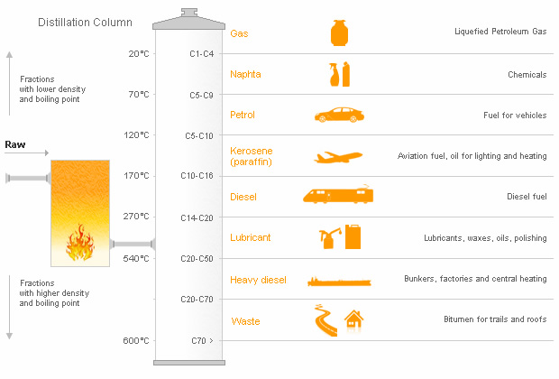
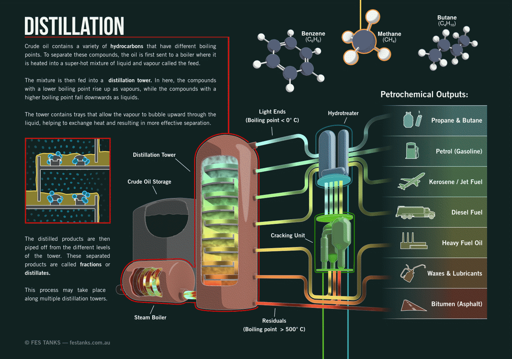
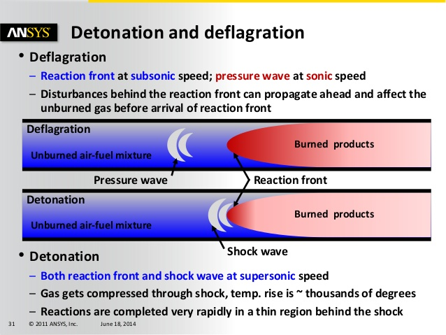
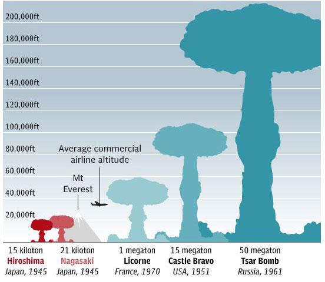
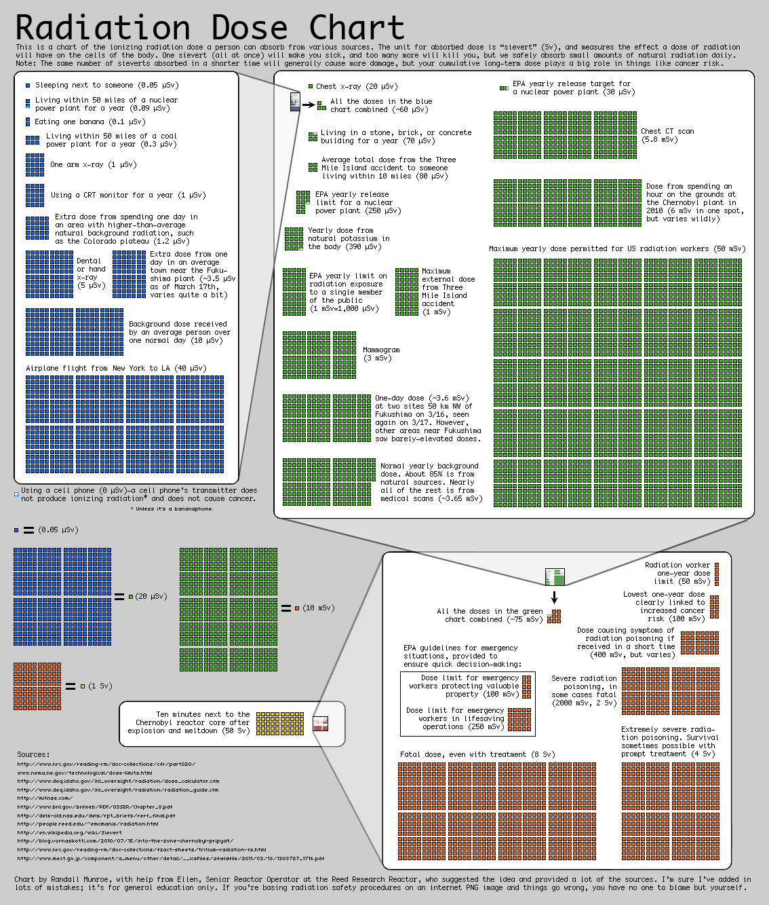
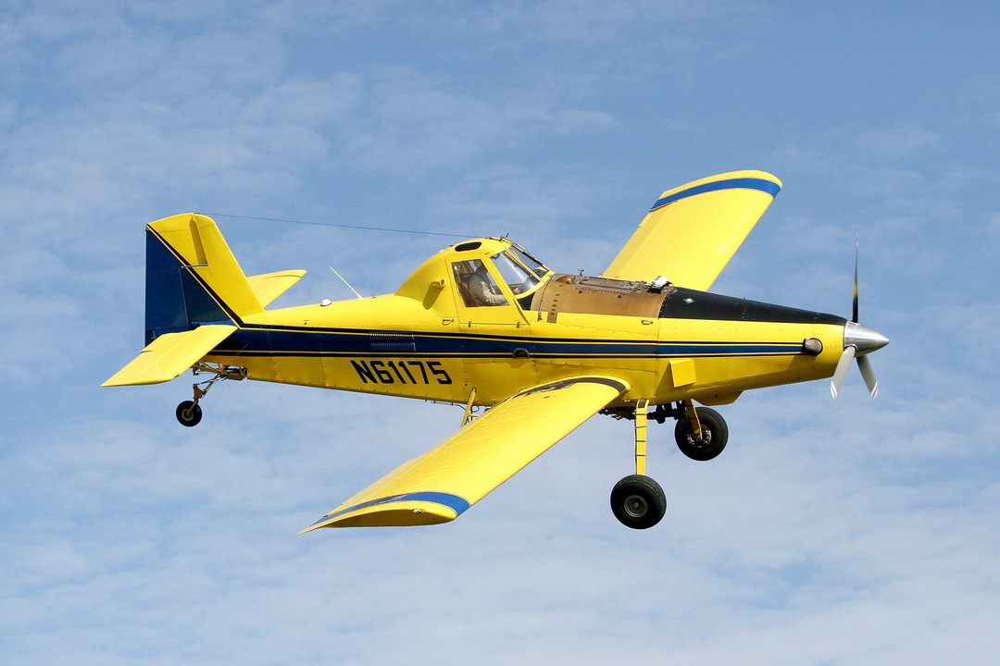
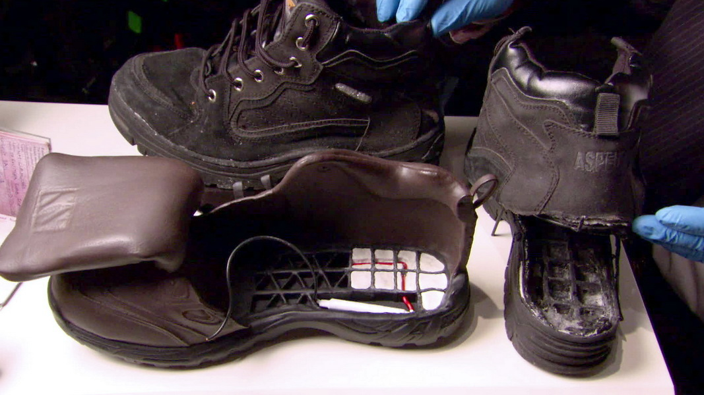

Physics for Future Presidents
Table of Contents
1 目录
| 开场白 | Introduction | |
|---|---|---|
| 第一部分 | 恐怖主义 | Terrorism |
| 第一章 | 9·11 | Nine-Eleven |
| 安检 | Inspecting Passengers | |
| 接管 | Taking Control | |
| 开飞机 | Flying and Navigating the Airplane | |
| 撞击 | Impact | |
| 第二章 | 恐怖核弹 | Terrorist Nukes |
| 大核弹 | Big Nukes | |
| 恐怖脏弹 | The Terrorist Dirty Bomb | |
| Rogue Nukes | ||
| 铀弹 | Uranium Bombs | |
| 钚弹 | Plutonium Bombs | |
| 第三章 | 下一次恐怖袭击 | The Next Terrorist Attack |
| 未来的飞机燃油攻击 | Future Airplane Gasoline Attacks | |
| 飞机上的炸弹 | Bombs on Airplanes | |
| 第四章 | 生物恐怖 | Biological Terrorism |
| 总统备忘录 | Presidential Summary | |
| 第二部分 | 能源 | Energy |
| 第五章 | 能源惊奇 | Key Energy Surprises |
| 第六章 | 太阳能 | Solar Power |
| 第七章 | 石油的终结 | The End of Oil |
| 总统备忘录 | Presidential Summary |
2 开场白
想了解现代世界的物理学，同样重要的是忘掉那些你以为正确其实并不正确的东西。人们常引用据说是马克·吐温的一句话：大多数老百姓的麻烦不在于他们无知，而在于他们知道太多不是那么回事的事情。
Equally important to understanding the physics of modern life is unlearning the things that you may think are true but aren't. Mark Twain is often quoted as saying, The trouble with most folks isn't their ignorance. It's knowin' so many things that ain't so.
3 第一章：9·11
破坏性能量的真正来源，就是每架飞机携带的驱动着它飞过美国领空的那 60 吨喷气燃料。汽油有着巨大的能量密度，1 吨燃料或汽油在空气中燃烧时，释放出 15 吨 TNT 的能量。
The true source of the destructive energy was the 60 tons of jet fuel that each plane carried to propel it across the United States. One ton of jet fuel or gasoline, when burned in air, releases the energy of 15 tons of TNT.
实际上，巧克力饼干都比 TNT 能量大。每克（大约两个巧克力粉末的重量）巧克力饼干释放大约 5 食物卡路里的能量，而每克 TNT 只有 0.65 食物卡路里――小了 9 倍。
In fact, even chocolate chip cookies have more energy than TNT. The chocolate chip cookies deliver about 5 food calories of energy per gram (the weight of about 2 chocolate chips), whereas TNT delivers only 0.65 food calories per gram — nine times less.
用 TNT 不是看它的能量大小，而是因为它能非常迅速地释放其能量。原因在于，它（不同于汽油或巧克力）释放能量不必与空气发生反应 。TNT 分子的原子就像固定的被压缩的弹簧，打破 TNT 的一个分子，就等于解开相邻的弹簧扣，于是引爆 TNT 的链式化学反应。弹簧能量可以在百万分之一秒内转化为动能，因而分子具有很高的速度，这意味着它们有很高的温度。
TNT is used not because of its high energy content, but because it can release its energy very rapidly. It can do this because (unlike gasoline or chocolate chip cookies) it doesn't have to be combined with air. The atoms in the TNT molecules are analogous to compressed springs held by a catch. Break one molecule of TNT, and the energy breaks the adjacent catches. TNT then detonates as a chemical chain reaction. In a millionth of a second, the energy of the springs is transformed into energy of motion. The molecules have high velocity, and that means they are hot.
不同材料的能量含量是一个关键因子。 高效计算机电池释放的能量只是同等重量的汽油能量的 1% 。这么低的能量转化率，正是我们现在还开不上电动车的基本物理原因。
The energy content of various materials is a key determinant. A high-quality computer battery, for example, delivers only 1% of the energy of an equal weight of gasoline. That low number is the fundamental physics reason why most of us are not yet driving electric automobiles.
汽油（包括其不同形式，如石油和喷气燃料）包含着巨大的能量，因而早就成为武器的理想物质。其应用的历史大概可以追溯到拜占庭时代的希措人，也许正是神秘的「希腊火」。20 世纪 30 年代西班牙用的莫洛托夫鸡尾酒的关键成分就是汽油。莫洛托夫（Molotov）鸡尾酒就是燃烧瓶或燃烧弹。1939 年 11 月苏联入侵芬兰（即所谓「冬战」），芬兰人就用这种土武器来对付苏联坦克，并讽刺性地用当时苏联外长的名字命名它。在两次世界大战中，火焰喷射器喷出的就是燃烧的汽油。在越南战争中，以汽油制造的凝固汽油弹臭名远扬。 汽油有着巨大的能量密度。 7 吨汽油混合着空气，从降落伞点燃下来，会释放 100 吨TNT的能量。所以，你用不着放 TNT 炸弹，那是在浪费飞机的升空能力。带着汽油就行了， 它比炸药的能量高 15 倍。
The huge amount of energy in gasoline (and its other forms, including oil and jet fuel) has long made it an ideal substance to use in weapons. The history of such use probably dates back to the Byzantine Greeks and may be the secret of "Greek fire". Gasoline was the key component of the Molotov cocktails used in Spain in the 1930s. In World Wars I and II what the flamethrowers really threw was burning gasoline. Napalm, based on gasoline, became infamous during the Vietnam War. … the huge energy density of gasoline. Seven tons of gasoline, mixed with air and detonated from a parachute, releases the energy of over 100 tons of TNT. So don't drop TNT bombs; you are wasting airplane lift capacity. Carry and drop gasoline. It gives fifteen times the bang per ton.


9·11 恐怖分子在波士顿登上美国航空公司 11 号班机时，他随身的唯一非法的东西就是他的图谋。尽管所有航空安检存在诸多缺陷，但阿塔和他的同伙也没胆量冒险携带武器。也用不着。9·11 行动的天才在于它风险很低。不需要炸药，不必在飞机上偷藏武器。计划暴露的危险也很小，因为只需要一个恐怖分子知道任务的细节，那就是飞行员。阿塔的计划还取决于当时的飞行政策――即鼓励飞行员与劫机者合作，不争吵，不恐吓，照劫机者说的做――这样的政策在那时很有救，但以后不会了。这种措施在过去救过很多人的生命（也包括飞机）。9 月 11 日将是轻松劫机的最后时机。过了 9 月 11 日，空中警察几乎没有必要了，因为没有哪个飞行员愿意让恐怖分子来操纵。即使劫机者杀了飞行员，也将激起乘客和机组人员的勇气和怒火。
When the 9/11 terrorist boarded American Airlines Flight 11 in Boston, the only illegal things he carried were his intentions. Despite all the well-documented weaknesses of our airline inspections, the risks of being caught with a weapon were too great for Atta and his fellow terrorists to take that chance. And they didn't have to. The genius of the operation was its low risk. No explosives were needed. No illegal weapons had to be smuggled on board. The danger of the plan being discovered was small because the only terrorists who had to know the details of the mission were the pilots. Atta's plan depended on an airline policy — a policy in force on that day, but never again — that encouraged pilots to cooperate with hijackers. Don't argue, don't threaten; just do what they ask. That approach had saved lives (and airplanes) in the past. September 11 would be the last day on which an airplane could be hijacked with ease. After September 11, sky marshals are hardly necessary, because no pilot ever again will willingly hand over the controls to a terrorist. Even if a hijacker kills the pilots, the courage and fury of the passengers and crew will be unleashed.
3.1 安检
金属探测仪用来探测金属刀具和枪支，其工作原理是金属导电而大多数其他材料不导电。旅客要通过的入口，从物理学角度看就像一个大线圈。电流通过导线，使它成为一个大磁体。磁体感生出电流，流过通过它的任何金属，同时也使金属成为磁体。于是，线圈可以感知有磁体出现。如果你带有永久磁体，即使是陶做的（这样它就不是良导体了），「金属」探测仪也能发现它。因为这个道理，很多书都藏有小磁条。
Metal detectors are designed to detect metal knives and guns. They work because metals conduct electricity and most other materials do not. The passenger is asked to walk through a portal that (from the physics point of view) is just a big coil of wire. Electric current is passed through the wire, making it a big electromagnet. This electromagnet induces current to flow in any metal that passes through it, making that metal into an instantaneous magnet itself. Then the coil can sense the presence of that magnet. If you are carrying a permanent magnet, even if made from ceramic (so that it is not a good conductor), the "metal" detector will pick it up too. That's why many books contain hidden magnetic material — so that the detectors at bookstores can detect a stolen book when the thief tries to leave the store.
金属探测器探测导体和磁体。因为人有一定的导电性（主要是因为溶解在血液里的盐），所以探测仪不能太灵敏，这个约束就为偷藏武器留下了漏洞。致命刀具如果用陶（一般是锆石，这种材料也用来假冒钻石）来制造，就可以安然通过检查。
Metal detectors detect conductors and magnets. Because humans are somewhat conductive (mostly because of the dissolved salt in the blood), the metal detector can't be made too sensitive, and that constraint creates a weapon-smuggling loophole. Deadly knives can be made of ceramic (typically zirconia, also used for counterfeit diamonds), and they would pass through undetected.
如果机场安检人员认为某样东西可疑，就可能用嗅探器再查你一遍。这种仪器用棉花头接触你的行李或服装，它带着一个能识别一般爆炸物的系统。如果你制造过炸弹，它就可能发现炸药发出的蒸气。嗅探器不必探测炸弹，如果炸弹包裹好，它也测不出来。但你的服装、头发、手指和随身的其他东西很难完全清除炸弹的气味。
If airport security personnel think something is suspicious, they might send you to be tested by a sniffer device. The operator will take a cotton-tipped swab and rub it on your luggage or on your clothing. It is placed in a box that has a system for recognizing the most common explosives. If you have built a bomb, then the vapors from the explosives will probably be found. Sniffers don't have to detect the bomb itself, and they may not be able to if it is well wrapped. But it is very hard to get rid of all the bomb smell from your clothing, hair, fingernails, and other things you carry with you.
安检人员在 9·11 事件中没有过失，过失在于安全法规。问题出在我们对可能的恐怖攻击的实质缺乏先见之明。美国人不曾料到一个能精明地劫持飞机的人会甘心情愿地奉献自己的生命。
Airport inspectors did not fail on 9/11; it was the security policy that failed. It was our anticipation of the nature of the likely terrorist attack that was deficient. Americans did not expect anyone sophisticated enough to hijack an airplane to be willing to commit suicide.
3.2 接管
在 2001 年，飞行的政策是与劫机者合作。这项政策是基于没人料到劫机者会将飞机用作武器。人们预防的是过去经历的那类攻击——即他们认为最可能发生的攻击。
In 2001 it was airline policy to cooperate. The security people were well prepared for the kinds of attacks they had experienced in the past — the kind they considered more likely.
3.3 开飞机
飞行员训练的主要科目是学习如何着陆，如何起飞，如何确信一切正常，如何应对可能的故障。把飞机保持在相对水平的航线，甚至对准机场跑道，都不算难事。难的是着陆，假如你想活着下来的话。
Most airplane pilot training consists of learning how to land the plane, how to take off, how to make sure nothing goes wrong, and what to do if something does. Keeping an airplane in relatively level flight, even aiming it at an airport runway, is not difficult. Landing is the hard part, at least if you want to stay alive.
3.4 撞击
能点燃油料的东西很多，包括撞击产生的能量（突然的压缩点燃柴油机引擎里的燃料）、火花、甚至引擎的热量。燃料来不及与空气很好混合，所以火球并不是真的爆炸，至少不是产生极大危害的那种爆炸。在真正的爆炸中，高压气体的膨胀可以粉碎混凝土。在世贸中心的火球中，膨胀的气体是亚声速的（比声音的速度低），和通常的亚声速气体一样，它们只是分散到支柱。它们只是冲垮了非承重墙，多数结构都完好无损。用行话来说，我们可以称之为爆燃而非爆炸。
Many things could have ignited the fuel, including energy from the impact (sudden compression ignites the fuel in a diesel engine), sparks, or just heat from the engine. There was no time for the fuel to mix well with air, so the fireball was not really an explosion, at least not the kind that does enormous extra damage. In a true explosion the high-pressure gas expands with such force that it can shatter concrete. In the World Trade Center fireball, the expanding gases were subsonic (slower than sound velocity), and mostly they just passed around the support columns, as subsonic gases will do. They blew out walls that were not load-bearing but left most of the structure intact. In the technical jargon of science, we might call it a deflagration rather than an explosion.

喷气燃料产生烈焰，其温度远远超过了大厦设计者们的预想。他们怎么也想不到成吨的喷气燃料堆积在一起，在他们的摩天大楼顶部燃烧一个多小时。钢在高温熔化，在比它低得多的温度下软化。当柱子的温度达到 1500°F 时，就足够柔软，很容易弯曲。只要柱子弯曲了，它就不再能支撑重量。于是所有重量都压在其他柱子上。结果就像雪崩。当更多的柱子弯曲时，剩下的就不能支撑全部重量。整层楼是在不到 1 秒的时间内坍塌的。于是大厦的上部就像一把巨大的铁锤，将下面的楼层砸碎。下面的楼层不可能顶住如此强大的压力，所以它的柱子几乎在瞬间就崩溃了。于是，新垮塌的楼层与上面的楼层一起，砸向更下面的楼层，就这样一路下来。大厦是一层层坍塌的，但快得就像自由下落。
The jet fuel created a holocaust far hotter than had been anticipated by the building designers. They never imagined having tons of jet fuel adding to the potential fire problem and burning for over an hour near the top of their skyscrapers. At high temperatures, steel melts. At much lower temperatures, it softens. When the temperature of the columns reached 1500°F, they weakened enough to become vulnerable to buckling. As soon as one column of the tower buckled, it no longer supported its share of weight above it. All the weight now rested on the remaining columns. The result was like an avalanche. As more columns buckled, the rest could not possibly support all the weight. The entire floor collapsed in less than a second. The massive part of the building above then fell like a sledgehammer, slamming into the floor below. The lower floor could not possibly support such a force, so its columns buckled too, virtually instantly. Then this floor joined the upper part of the building in slamming into the next lower floor, and so on. The building was crushed, one floor at a time, but almost at the speed of free fall.
消防队员也没想到大厦会以这种方式坍塌。一座高楼完全倒塌，根本是预料不到的。如果不是第二个塔楼也同样坍塌，我们也许还在争论那种事情发生的概率有多大呢。
The firemen did not anticipate this mode of collapse. The complete collapse of a tall building was essentially unanticipated. We might still be debating the probability that such a thing could happen again, if not for the matched collapse of the second tower.
4 第二章：恐怖核弹
核链式反应释放的能量是相同重量 TNT 的 2000 万倍。
A nuclear chain reaction releases typically 20 million times as much energy as an equal weight of TNT.
最大的人造核爆炸是苏联在 1961 年 10 月 30 日进行的一次试验。其能量相当于 5000 万吨 TNT，比广岛原子弹还高 3000 倍。这样的武器足以摧毁整个纽约城。
The largest man-made nuclear explosion was a test carried out by the Soviet Union on October 30, 1961. It released the energy of 50 megatons of TNT, 3000 times as much as the Hiroshima bomb. Such a device could destroy all of New York City.

20 世纪 60 年代初，美国造过一种小型核武器，叫大卫·克罗基特。它重 50 磅，但爆炸能量相当于几百磅 TNT。一个士兵能把它带在身上，用无后座力炮发射。为了制造这种武器，不仅需要天才，还需要深刻理解核武器的物理学、精密的计算机分析和大型试验计划的结果。熟悉核武器设计的人都不相信恐怖集团能造出那样的武器。
In the early 1960s, the United States built a small nuclear weapon called the Davy Crockett. It weighed about 50 pounds and yet could explode with the energy of several hundred pounds of TNT. It could be carried by a single soldier and launched from a recoilless rifle. To create this weapon, required not just genius but a deep understanding of nuclear weapons physics, exquisite computer analysis, and the results of a large testing program. Nobody knowledgeable in the design of nukes believes that such a weapon could be produced by a terrorist group.

精明的恐怖集团也许能制造千吨级的核武器，倘若他们能得到特殊的核原料：几十磅或更多的原子弹级的铀或钚。这样的集团应该有参与过核武器计划的物理学家。它还需要博士水平的工程师，而且对爆炸条件下的材料行为有丰富的经验。他们应该是一群有素养的机械师和技术员。我们不能排除恐怖分子能组成这样的团队。
A sophisticated group of terrorists could make a weapon in the kiloton range, provided that they could obtain the special nuclear materials: 10 pounds or more of bomb-grade uranium or plutonium. Such a group would include a physicist who had worked in a nuclear weapons program. It would need PhD-level engineers with extensive experience in the behavior of materials under explosive conditions. They would have to be joined by expert machinists and technicians. We can't rule out the terrorists putting together such a team.
千吨级的爆炸半径大约是 450 英尺。如果原子弹在纽约市中心公园引爆，都不能毁坏公园外的建筑。不过，核辐射的半径大得多，可能波及周围建筑，但也不会穿透第一排大楼。实际上，多数死亡可能是公园周边的玻璃碎片引起的。
A 1-kiloton blast radius is about 450 feet. If the bomb were detonated in the middle of New York City's Central Park, the blast would not destroy buildings outside of the park. Nuclear radiation has a longer reach, though, and might reach the surrounding buildings, although it would not penetrate beyond the first row. Most deaths might, in fact, be caused by shattered glass on the periphery of the park.
其他类型的恐怖攻击―有些远比核武器更容易得到―也可能产生同样甚至更大的灾难。恐怖攻击的伤亡和破坏要看时间和地点。元旦那天在玫瑰碗球场中心的千吨级的爆炸能杀死 100,000 人，而同样的爆炸在纽约港就顶多毁坏附近的船只，几乎不会破坏其他任何东西。
Other types of terrorist attacks — some far more accessible to terrorists than nuclear weapons are — can produce casualties of equal or greater horror. The death and destruction depend on time and place. A 1-kiloton blast in the center of the Rose Bowl on New Year's Day could kill 100,000 people. But such a blast in the middle of New York Harbor would destroy nearby boats, and virtually nothing more.
4.1 大核弹
我们的核导弹携带的每个弹头都不超过一个人的大小，但它的能量相当于 10 万吨 TNT。这种核弹的爆炸范围超过半英里，热辐射能扩展到 2 英里。B52 飞机装载的 B83 核弹有相当于百万吨级的弹头，爆炸半径 2 英里，热辐射 5 英里。这样的核弹能摧毁曼哈顿的整个下半区。 实现这种大爆炸的唯一途径是用二级核弹，用初级核弹引爆次级的氢弹 。我认识的每个专家都认为这种设计超出了任何恐怖集团的能力。它需要巨大的科学与工程计划，连很多国家都承担不起。
Each warhead carried on our nuclear missiles is no larger than a man, yet it delivers 100 kilotons of TNT equivalent. The blast range for such a bomb is over half a mile, and the thermal radiation extends 2 miles. The B83 bombs carried by B-52s had megaton warheads, with a blast radius of 2 miles and thermal effects extending to 5 miles. Such a bomb could destroy the entire lower half of Manhattan. The only way to achieve such huge explosions is to use two-stage bombs, with a nuclear primary that ignites a hydrogen secondary. Every expert I know agrees that such a design is beyond the capability of any terrorist group. The huge scientific and engineering program required to do it may even be beyond the capability of many countries.
被盗核武器依然是最大威胁。针对这个威胁的主要预防措施是，确保我们美国有大量秘密推销员，假装向恐怖分子出售真正的武器；还有大量的秘密买家，向可能拥有那些武器的人高价收买。俄罗斯无疑也有同样的行动。在这个艰难而危险的市场上，我们要想方设法不让真正的买家和卖家找到对方。
A stolen weapon still remains the greatest threat. The main defense against this threat is to make sure that we, the United States, have lots of undercover salesmen out there pretending to sell real weapons to the terrorists, and undercover buyers bidding to purchase weapons from those who might have them. Russia undoubtedly has similar operatives. In this difficult and dangerous market, we need to make it extremely hard for real buyers and sellers to find each other.
4.2 恐怖脏弹
放射性武器――脏弹的专业名字――不需要核裂变或核聚变武器那样的核爆炸，而是通过普通爆炸来散布已有的放射性物质。
Radiological weapons — the fancier name for dirty bombs — do not require nuclear explosions like fission or fusion weapons do, but instead use ordinary explosives to spread preexisting radioactive material.
基地组织曾怀疑脏弹计划不可行。他们指示改用天然气爆破两座公寓。他们显然觉得这种方式能比放射性武器产生更大的杀伤和破坏。照物理学家的考虑，基地组织似乎比许多政府官员、新闻记者甚至物理学家更明白那些武器的局限。
Al-Qaeda had doubted that the proposal to build a dirty bomb was practical. They directed instead to blow up two apartment buildings using natural gas. They apparently felt that such an action would have a greater chance of spreading death and destruction than would a radiological weapon. According to physics considerations, al-Qaeda appears to understand the limitations of these devices better than do many government leaders, newspapers, and even many scientists.
1400 居里铯 137。辐射的危害以雷姆为单位来计量。如果你站在铯源 1 码之外，不到 1 小时你就能吸收 450 雷姆的辐射。对铯来说，这个辐射剂量比 LD50（50% 致命剂量） 高 50%，就是说，如果不经过治疗，你会有 50% 以上的几率在几个月内死于辐射。
1400 curies of cesium-137. Radiation damage is measured in a unit called the rem, and if you stand 1 yard from such a cesium source, you'll absorb 450 rem in less than an hour. This dose of radiation is 50% higher than the LD50 (which stands for lethal dose 50%) for cesium-137, meaning that, untreated, you'll have greater than a 50% chance of dying in the next few months from that exposure.

通过爆炸将 1400 居里散布在更大的区域――如邻近的 1 平方英里。结果是每平方码的辐射为 0.5 毫居里。仔细计算表明，如果你暴露在这个区域内，那么 1 小时后你吸收的辐射为 0.005 雷姆，即 5 毫雷姆。这是很小的量，远低于致病的量（100 雷姆），所以你根本不会得病。如果你住在那个区域，即使过 1 个月，辐射剂量也只有 4 雷姆，仍然低于辐射病的临界值。对中等计量的辐射。历史记录的结果表明，每雷姆大约会增大 0.04% 的风险。以 0.04% 乘以 4 雷姆，你得癌症的危险是 0.16%。如果我们以 20% 近似估计美国因「自然因素」导致的患癌率，那么在脏弹区生话 1 年，将把死于癌症的几率提高到 20.16%。那很糟糕，但你会因此搬家吗？
Use explosives to spread our 1400 curies over a larger area — say, a neighborhood 1 mile square. The result will be a radioactivity of 0.5 millicurie per square yard, and a careful calculation shows that if you are in this area, then after an hour of exposure your exposure will be 0.005 rem, 5 millirem. That's a tiny amount, far below the threshold for radiation illness (100 rem), so you won't get sick at all. If you stay in the area, even after a month your dose will be only 4 rem, still way below the threshold for radiation sickness. For moderate doses, results from historical exposures suggest that the increased risk of cancer is about 0.04% per rem. Multiply 4 rem by 0.04%, and you get a danger of induced cancer of about 0.16%. If we approximate the cancer rate in the United States from "natural causes" as exactly 20%, then living in the dirty-bomb zone day and night for a year would increase the likelihood of dying from cancer to 20.16%. That's bad, but is it bad enough for you to evacuate your home?
低辐射可能致癌，但那要等好几年的时间。我想基地组织不会满足于拿未来癌症患者的数量来吹嘘，他们需要让追随者看到尸体的照片。即使用钚制造的放射性炸弹也不会太危险。炭疽更能致命，也更容易得到和运输。核废料储藏设施和核反应堆具有更强的放射性，如果它们的放射性被转移、释放和散布出来，那就真的危险了。
Low levels of radioactivity can induce cancer, but that takes years. I suspect that al-Qaeda doesn't just want to brag about the number of premature cancers that will be induced by their attack. They need their followers to see photos of bodies. Even a radiological bomb made with plutonium is unlikely to be dangerous. Anthrax would be deadlier, and much easier to obtain and transport. Nuclear waste storage facilities and nuclear reactors contain vastly more radioactivity, and the danger from them would be substantial if their radioactivity could be transported, released, and spread.
高能伽马射线很难屏蔽，所以炸弹也许要装配在数吨重的铅壳下面。所有脏弹都存在一个相同的问题：未爆炸的炸弹的强辐射可以杀死恐怖分子，而爆炸释放出来的辐射被稀释了，达不到引发辐射病的浓度――除非攻击的区域很小。
Energetic gamma rays are not easy to shield, so the bomb would be assembled probably behind tons of lead. All dirty bombs have the same problem: intense radioactivity from the unexploded bomb that can kill the terrorists, and diluted radioactivity after it is exploded that drops below the threshold for radiation illness, unless the area attacked is very small.
今天的恐怖分子可能用放射性武器，并不是因为它实际的破坏，而是期待它引起广大的恐慌和经济的崩溃。放射性武器的最大危险在于它可能引起的过分恐慌和过度反应。脏弹不是真正的大规模杀伤性武器，但可能是大众化崩溃性武器。
A terrorist today might use a radiological weapon, not because of its actual damage but in anticipation of the out-of-scale panic and ensuing economic disruption that the weapon could trigger. The biggest danger from a radiological weapon is the misplaced panic and overreaction that it would cause. A dirty bomb is not really a weapon of mass destruction, but it is potentially a weapon of mass disruption.
4.3 Rogue Nukes
In many ways, the real threat is not nukes made by terrorists but rather nukes made by rogue nations. The term is usually applied to relatively undeveloped countries that violate a perceived commitment to the Nuclear Non-Proliferation Treaty and covertly develop nuclear weapons. A rogue nation might deny that it is making a weapon, or claim that its technological development has only to do with peaceful applications (so the nonproliferation treaty doesn't apply), and finally (after it has tested the weapon) argue that it had a right to do so because its national security was threatened.
The dominant worry is that the rogue nation will develop "small" nuclear weapons, such as the ones that the United States used to destroy Hiroshima and Nagasaki in 1945. There is no concern that they will develop a thermonuclear weapon until they have gone through the first stage of building a uranium or plutonium bomb.
4.4 铀弹
铀弹设计很简单，问题在于获取浓缩铀 235。现代离心分离技术所用的一种关键材料叫马氏体时效钢。为了探明铀弹的行动，要密切关注离心机的重要组成：在高速下支撑系统的特殊轴承，或维持离心机不致分裂的时效钢。也别忘了寻求更粗也更容易的分离技术，如同位素分离器。
The design of a uranium bomb is simple; the problem is obtaining enriched uranium-235. One of the key materials used in modern centrifuges is called maraging steel. To detect work on a uranium bomb, be on the lookout for centrifuge components: special bearings needed to suspend them at high speeds, or maraging steel to keep the centrifuge from spinning apart. But don't forget to look for cruder but easier separation technologies, such as calutrons.
4.5 钚弹
钚相对容易获取。如今许多国家在运行核反应堆，含量丰富的铀 238 通过这些设施逐渐转化为钚。 核不扩散条约规定，遵守条约的国家不得从核废料提取钚。 提取的过程叫核燃料回收。 为了阻止私下回收，核电站都在国际原子能机构的监督之下。
Plutonium is relatively easy to get. Many countries now operate nuclear reactors, and in these devices the abundant kind of uranium called U-238 is gradually turned into plutonium. The Nuclear Non-Proliferation Treaty specifies that the abiding country may not extract this plutonium from the reactor waste. To do so is called reprocessing the fuel. To prevent covert reprocessing, nuclear power plants are inspected by the International Atomic Energy Agency.
钚弹需要精密调节的内爆，而这是很难实现的，它不仅要求炸药量精准，在瞬间引爆，还需要进行大规模的试验计划。
A plutonium bomb requires a carefully tuned implosion, and that is very difficult to achieve. To do so requires not only exquisitely shaped explosive charges and simultaneous detonation, but also an extensive testing program.
5 第三章：下一次恐怖攻击
5.1 未来的飞机燃油攻击
汽油是恐怖分子容易选择的低技术武器。汽油爆炸的风险低，购买也不需要特殊证件。如果基地组织的特务想进行恐怖袭击，他们的武器仍然可能就是在路边加油站就能买到的东西。
Gasoline could easily remain the low-tech weapon of choice for terrorists. Gasoline is a low-risk explosive, and purchasing it doesn't require a special license. So beware. If al-Qaeda agents want to kill and terrorize, then their weapon of choice may well be one that can be bought at the corner station.
一架「空中拖拉机」502 型农用机的肥料箱能装大约 320 加仑液体，另外还有 130 加仑的油箱。它贴近地面飞行，可以逃避多数雷达技术的跟踪。给飞机装满 450 加仑汽油，就等于带着 2.1 ~ 2.4 吨燃料――相当于 32 ~ 36 吨 TNT。幸运的是，空中拖拉机 502 很难驾驭，满载时更难，而要将飞机保持在躲避雷达的低空，更是难上加难。所以，它不太可能成为未来恐怖分子的武器。只要不想着陆，操纵波音 767 可能更简单。另外，农用飞机的组织很小，关系密切，而且机警。他们对恐怖威胁非常敏感。在可预见的将来，每个造访农用飞机设施的人都将立即被报告给联邦调查局。
An Air Tractor 502 crop duster airplane has fertilizer containers that hold roughly 320 gallons of liquid, plus a 130-gallon fuel tank. It flies close to the ground, where it cannot be detected by most radar technologies. Fill'er up with 450 gallons of gasoline, and you are carrying roughly 2.1 to 2.4 tons of fuel — the energy equivalent of 32 to 36 tons of TNT. Fortunately, the Air Tractor 502 is notoriously difficult to fly, particularly when fully loaded, and piloting this plane is even more difficult if the plane is kept at low (radar-avoiding) altitude. That makes it an unlikely terrorist weapon for the future. Maneuvering a Boeing 767 is probably easier, as long as landing is not required. Moreover, the crop duster community is very close, small, and wary. They are very sensitive to the terrorist threat. For the foreseeable future, every suspicious visit to a crop duster facility will be reported immediately to the FBI.

5.2 飞机上的炸弹
里德是基地组织的一员，2001 年 12 月 22 日，他企图点燃藏在鞋子里的导火线，炸毁美国航空公司 63 号航班。正因为这个，机场要你脱鞋。他们是在寻找其他鞋炸弹。为了发挥效力，这种炸药必须用在飞机内的特殊位置。里德企图点燃导火线时，据说已经把鞋挤进了靠窗的座位与机先之间，可能是想在机体炸一个缺口。那将导致飞机结构产生灾难性的破坏，然后坠毁。
Richard Reid was the al-Qaeda terrorist who tried to light a fuse on his shoe bomb to blow up American Airlines Flight 63 on December 22, 2001. That's why airport security makes you take off your shoes. They are looking for the other shoe bombs. To be effective, such a weapon has to be used in a special place within the plane. When Reid tried to light the fuse, he had reportedly wedged the shoe between a window seat and the wall of the airplane, as if he wanted to blow a hole in the structure. That could have led to a disastrous weakening of the airplane structure and a crash.

没有能仔细探测配制炸药的良方。人们最感兴趣的是用以监测炸药中氮含量的中子活化技术。但是，这种技术会发出很多错误警报，因为皮革和其他材料也含有大量的氮。目前最有希望的是离子迁移飞行时间质谱仪。这是机场广泛使用的「嗅探器」式的仪器。如果对你的行李有怀疑，安检人员就拿它来「嗅」，通过仪器进行分析。这种仪器每台至少 50,000 美元，而且错误警报率低于千分之一。但它可能遗漏精心包装的炸药，除非包裹或带它的人沾染了它的味道。
There is no good way to detect carefully prepared explosives. Neutron activation, which detects the nitrogen in explosives, has received the most attention. But this technique generates too many false alarms from leather and other materials that also contain lots of nitrogen. The best bet today is the ion mobility time-of-flight spectrometer. This is the sniffer that is in wide use at airports. If suspicious, a security agent takes a swab of your luggage to analyze in the machine. The device costs less than $50,000 and has a false-alarm rate of less than one in a thousand. But it would miss a carefully wrapped explosive, unless the outside of the package (or the person carrying it) was contaminated.
迫使基地组织采用自杀式炸弹，为我们提供了便利。因为它极大限制了执行恐怖任务的人数。那些能做这些事情的人，几乎不可能是我们考虑过的「精英中的精英」。只要我们迫使基地组织用这些货色，他们就免不了被人注意，想进行协同攻击就几乎不可能了。自 9·11 以来美国就没有发生过大的恐怖袭击（除了炭疽邮件）。
Forcing al-Qaeda to use suicide bombers gives us a great advantage. It significantly limits the number of people available for terrorist duty. And the ones remaining are hardly la crème de la crème, as we once thought. As long as we force al-Qaeda to use such people, they will be noticed, and that makes a coordinated attack virtually impossible. That's part of the reason why — with the exception of the anthrax mailings — there has been no major terrorist attack in the United States since 9/11.
6 第四章：生物恐怖
天花比炭疽（anthrax）更能杀人，因为它像链式反应一样传播。炭疽不能由一个人感染另一个人，它只能杀死少数将原始孢子吸进肺里的人。
天花攻击可不会仅限于美国。它将不可避免地传到全世界。实际上，美国很可能是受害最轻的国家之一，因为它有卓越的卫生保健系统。天花的真正受害者将是发展中国家。
根据灵长目动物实验估计，2,500 ~ 55,000 个孢子足以在一半的暴露人群中导致致命的肺部炭疽感染（这就是 LD50 剂量）。
军用炭疽面临的主要挑战就是要将孢子与空气彻底混合，使它们长久悬浮，被人呼吸。大多数传播方法几乎都不见效。致命剂量本身是没有意义的。
在实验中，炭疽在小房间暴露的半衰期是 5 分钟。就是说，孢子会很快落地，那时就几乎完全无害了（除非有人去吃地板上的尘埃）。
7 总统备忘录
我的意见是，不要过多关心这些高技术威胁。真正的危险来自「伊沃客」式的攻击：拿满载油料的飞机当导弹，或者在我们的多架飞机上同时引爆鞋弹。
必须让鞋子经过 X 光的照射。
不必担心小刀和其他尖锐物体，它们对飞机攻击完全不起作用，因为乘客是不会答应劫机的。
配置大量嗅探器――能探测炸药蒸气的质谱仪。你不可能探测炸药本身，因为它会精心包装；但你很可能在携带者的身上或手提箱发现炸药的残留气味。
8 能源
能源之所以重要是因为它联系着国家财富。美国的国民总产值是中国的 20 倍，能源消耗大约也是他们的 20 倍。财富似乎等于能源消耗。
| MJ/kg | |
|---|---|
| 反物质（antimatter） | c^2 ≈ 89,875,517,874 |
| 铀（Uranium） | 80,620,000 |
| 钚（Plutonium） | 2,239,000 |
| 氢（Hydrogen） | 121 |
| 甲烷（methane）、天然气（natural gas） | 55.5 |
| 柴油（diesel） | 48 |
| 液化石油气（LPG） | 46.4 |
| 航空煤油（jet fuel） | 46 |
| 汽油（gasoline） | 44.4 |
| 脂肪（fat） | 37 |
| 燃料丁醇（butanol fuel） | 36 |
| 可乐 | 28 |
| 燃料乙醇（ethanol fuel） | 26.4 |
| 煤 | 24 |
| 燃料甲醇（methanol fuel） | 17 |
| 糖类（carbohydrate） | 17 |
| 蛋白质（protein） | 16.8 |
| 木头 | 16.2 |
| 液氢（liquid hydrogen） | 13.4 |
| 牛排（steak） | 9.6 |
| TNT | 4.6 |
| 火药（gunpowder） | 3 |
| 锂电池（lithium battery） | 1.8 |
| 碱性电池（alkaline battery） | 0.67 |
| 锂电子电池（lithium-ion battery） | 0.36 ~ 0.875 |
| 镍氢电池（NiMH） | 0.288 |
| 铅酸蓄电池（lead-acid battery） | 0.17 |
能源价格
| /kWh | |
|---|---|
| 煤 | 0.4 ~ 0.8 美分（40 ~ 80 美元/吨） |
| 天然气 | 3.4 美分（10 美元/百万立方英尺） |
| 汽油 | 11 美分（3.7 美元/加仑） |
| 蓄电池 | 21 美分（50 美元/个） |
| 电脑电池 | 4 美元（100 美元/个） |
| AAA 电池 | 1000 美元（1.5 美元/个） |
| W | |
|---|---|
| 无线路由器 | 0.07 |
| 节能灯（compact fluorescent lamp，CFL） | 14 |
| 白炽灯（incandescent lamp） | 60 |
| 1 平米太阳能电池板（solar panel） | 120 |
| 1 平米日光 | 750 |
| 微波炉 | 1.1 k |
| 2008 年全球人均能源消耗 | 2.4 k |
| 2008 年美国人均能源消耗 | 10 k |
| 普通汽车（automobile） | 40 k ~ 200 k |
| 超级跑车（supercar） | 250 k ~ 800 k |
| 风力涡轮（wind turbine） | 1.5 M |
| 中型发电厂 | 50 M ~ 100 M |
| 波音 747 | 140 M |
| 大型发电厂 | 1 G |
| 胡佛水坝 | 2 G |
| 最大的火力发电厂（coal-fired power plant） | 4.116 G |
| 最大的核能发电厂（nuclear power plant） | 8.21 G |
| 三峡大坝 | 18.3 G |
| 2012 年法国总能源消耗 | 101.6 G |
| 2005 年美国总能源消耗 | 3.34 T |
| 2010 年全球能源消耗 | 16 T |
8.1 能源惊奇
在相同能量下，媒比油便宜 20 倍。
正午时刻每平方英里的阳光能提供 10 亿瓦的电功率――相当于一个大型煤矿、电厂或核电站。
每平方码的阳光照在地面大约为 1 马力，也等于美国家庭的平均功率。
汽油的能量是相同重量手电筒电池的 1,000 倍，电脑电池的 100 倍。
不可充电电池的能量成本是插头供电的 10,000 倍。
能量储存的差别是难以逾越的物理学障碍。
在相同重量时，汽油释放的能量是子弹的 720 倍。子弹是黑火药或其他类似火药爆炸驱动的，但这些弹药的能量一般比汽油低 15 倍。而且，并不是所有能量都在驱动子弹运动，很多能量通过膨胀气体丢失了。枪筒越长，传递给子弹的能量越多。
汽油为了供能，必须与氧结合。在汽车里，燃料通过喷射器或汽化器与空气混合。我们并不需要随身携带氧气，它和空气一样，不花一分钱，这也是汽油的能量优势的一部分。
弹药以硝酸钾代替氧作为其氧化剂，所以它不需要加入任何空气。这样，化学反应可以在浓缩状态下进行，速度比汽油快得多。火箭也必须携带氧化剂，有时是液态氧，有时是过氧化氢。
在相同重量下，汽油释放的能量近似等于：牛排的 4 倍，巧克力面包的 2 倍，黄油的 1.4 倍。蜂鸟只吸吮几滴花蜜就有足够的能量鼓动它的翅膀，显然，花蜜里的能量一定超过了蜂鸟做的功。食物几乎和汽油一样高能。
反物质遇到普通物质就会爆炸。反物质与氢有一种共同的特征：都不是能源。实际上它们是传送能量的方式。为了用反物质做燃料，我们首先要生成它，而那需要的能量比从它索回的还多。为了用氢做燃料，我们必须先将它从天然化合物中提取出来。
氢气与石油不同，不能从地球钻探出来。存在的氢都已经「燃烧过了」――就是说，与氧合成了水，或与碳合成了糖、淀粉或烃（碳氢化合物，包括植物、石油和天然气）。为了用氢，我们要把它与其他原子分开。可以让电流通过水――即所谓电解，将氢从水中取出来。但这个过程需要能量，当我们用氢做燃料时，得到的能量只是我们付出的 30%~40%．其余的都以热量形式浪费了。
一种从氢获得净能量的方法：从天然气中提取氢。多数氢都是通过这种方法获得的。天然气主要是甲烷，其分子由 1 个碳原子和 4 个氢原子组成。甲烷与水反应时，生成氢和一氧化碳（伴随少量二氧化碳）。
TNT 的能量低于汽油，但它释放那么一点能量的速度能粉碎岩石。汽油比 TNT 能量多，但 TNT 能比汽油释放更大的功率。
成人每天平均消耗 2,000 食物卡路里，相当于 2 kWh。
燃料有 4 种不同的用途――交通、发电、供热和工业――有着大致相当的总量。
美国能源来源：
- 29% 来自进口石油
- 11% 来自国内石油
- 24% 来自煤
- 19% 来自天然气（甲烷）
- 8% 来自核能
- 8% 来自其他（太阳、氢、风、生物量、地热）
替代能源面临的真正挑战是它必须比煤炭更加经济。煤炭是我们所用的最劣的二氧化碳污染物。为减少煤炭用量，我们当然可以加重它的赋税。但仅仅靠发达国家来做，解决不了什么问题，因为最终的问题在于发展中国家的能源利用。
8.2 太阳能
9 单位换算
9.1 英制单位
| 换算 | |
|---|---|
| 长度 | |
| 英尺（foot） | 1 ft ≈ 0.3 m |
| 英里（mile） | 1 mi ≈ 1.6 km |
| 码（yard） | 1 yd ≈ 0.9 m |
| 重量 | |
| 磅（pound） | 1 lb ≈ 0.45 kg |
| 容积 | |
| 加仑（gallon） | 1 gal ≈ 3.78 l |
9.2 辐射
| 符号 | 换算 | |
|---|---|---|
| 非公制 | ||
| 雷姆（rem） | rem | 1 rem = 0.01 Sv |
| 即：人体伦琴当量（roentgen equivalent man） | ||
| 居里（curie） | Ci | 1 Ci = 3.7E10 Bq |
| 国际单位制（SI） | ||
| 西弗（sievert） | Sv | 1 Sv = 100 rem |
| 毫西弗（millisievert） | mSv | 1 mSv = 0.001 Sv |
| 微西弗（microsievert） | μSv | 1 μSv = 0.001 mSv |
| 贝克勒尔（becquerel） | Bq | 1 Bq = 2.7E-11 Ci |
关于 Sv（rem）到 Bq（Ci）的换算：
Different isotopes emit different energy gammas and some emit more than one gamma. At the same rate of emission or decay, an isotope that emits more and higher energy gammas will give a higher rem/hr or Sv/hr. Ci and Bq are based on dpm/sec (dps). Consider the same emission rate (dps) for Cs-137 and Co-60. Co-60 will give you a higher dose-rate and dose because it emits two gammas above 1000 keV where Cs-137 emits only 1 gamma at 661.8 keV. Obviously Co-60 is emitting more electromagnetic energy per decay than Cs-137 which will give one a higher dose-rate in R/hr or Sv/hr. Also, the dose and dose-rate varies with the distance from the source. You cannot convert from Ci and Bq to R, rem or rad and Sv or Gy. You must do a complicated calculation on an isotope by isotope and a distance by distance basis.
Relationship Between Radionuclide Gamma Emission and Exposure Rate
9.3 能量
| 符号 | 换算 | |
|---|---|---|
| 旧公制 | ||
| 卡路里（calorie，small calorie） | cal | |
| 千卡（kilocalorie，large calorie，food calorie） | kcal, Cal | 1 kcal = 4.184 kJ |
| 国际单位制（SI） | ||
| 焦耳（joule） | J | |
| 千焦（kilojoule） | kJ | 1 kJ = 0.239 kcal |
- 1 MJ ≈ 0.28 kWh
- 1 Wh = 0.86 Cal
- 1 HP = 745.7 W